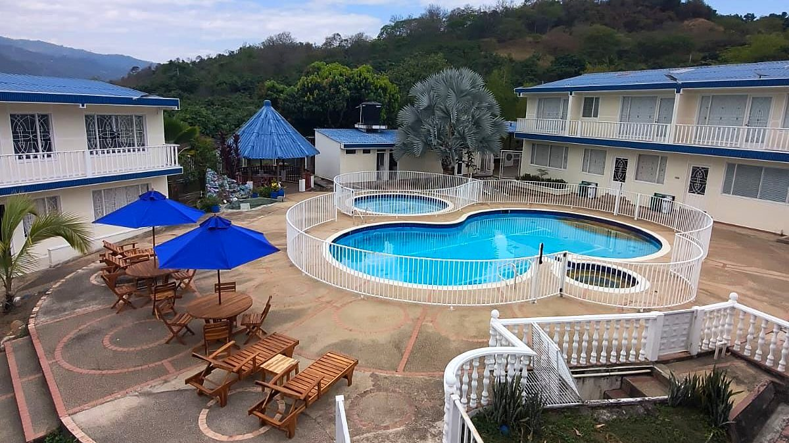

Plan de fin de semana cerca de Bogotá: un día completo en Hotel Cabaleón
Del desayuno frente a la montaña a la cena en Mangolé: así se vive un fin de semana de descanso, sin afán y a tu ritmo, a dos horas de Bogotá.
Lectura de 6 minHotel Cabaleón
No hace falta irse lejos para descansar de verdad. A unas dos horas de Bogotá, en la vereda Escalante de Tena, Hotel Cabaleón reúne piscinas, naturaleza y buena mesa en 9.000 m² de jardines frente a la Cordillera Oriental. Este es un día ideal, de la mañana a la noche.
Mañana: desayuno y piscina
El día empieza sin despertador. El desayuno está incluido en todas las tarifas y se sirve de 8:00 a 10:00 a. m. en el Restaurante Mangolé; si tienes alguna restricción alimentaria, avísanos al reservar.
Las piscinas abren a las 8:00 a. m.: la piscina para adultos, rodeada de jardines y con la montaña de fondo (de 90 a 170 cm de profundidad), y la piscina infantil, de 60 cm, para los más pequeños. A media mañana llegan los turnos de bienestar:
- Sauna seco (80 a 90 °C): 10:00 a 10:30 a. m.
- Jacuzzi, en la piscina principal: 10:30 a 11:00 a. m.
Mediodía: almuerzo en Mangolé y algo fresco en Cabalante
El almuerzo en el Restaurante Mangolé se sirve de 12:30 a 3:00 p. m. Su carta de favoritos tiene platos generosos y de sabor familiar: mojarra frita dorada, pechuga asada gratinada campestre, costillas BBQ de la casa, churrasco Mangolé con chimichurri, wrap Mangolé de pollo especiado, brochetas de pollo, pollo al curry, hamburguesa artesanal, crepe de pollo al curry y pasta Cabaleón al ajo y parmesano. Algunos platos incluyen la bebida del día de cortesía.
Desde la página del hotel puedes armar tu pedido, elegir si es para el almuerzo o la cena y enviarlo por WhatsApp; el equipo te lo confirma con la hora.
Junto a la piscina, Cabalante Bar atiende de 9:30 a. m. a 5:30 p. m. con cervezas, bebidas sin alcohol, licores por botella, snacks y obleas. El Snack-bar Mango Vista abre de 9:30 a. m. a 7:30 p. m.
Tarde: juegos, deporte o una asoleadora
La tarde se acomoda a cada quien. Hay cancha polideportiva, mini tejo y juego de rana (de 9:00 a. m. a 5:30 p. m.), billar y ping pong en los salones de entretenimiento, gimnasio, huerta turística y alquiler de equipos de avistamiento para disfrutar el paisaje y su fauna.
Si prefieres no hacer nada, también está bien: una asoleadora frente a la cordillera es el mejor plan. Antes de que cierre la zona húmeda quedan dos turnos más:
- Baño turco de vapor (50 a 70 °C): 4:00 a 4:30 p. m.
- Jacuzzi: 4:30 a 5:00 p. m.
Noche: cena y descanso
La cena en Mangolé se sirve de 6:00 a 7:30 p. m. Después, el fresco de la tarde, el silencio de la montaña y una habitación con aire acondicionado hacen el resto. Cabaleón es un lugar pensado para el descanso: hotel libre de humo y con música y conversaciones a volumen moderado.
Dónde dormir: cuatro tipos de alojamiento
Todas las habitaciones tienen baño privado, aire acondicionado, cajilla de seguridad, clóset amplio, televisión de alta definición y wifi, e incluyen desayuno y acceso a las piscinas y zonas verdes.
| Alojamiento | Huéspedes | Tamaño | Camas |
|---|---|---|---|
| Suite Cabaleón | Hasta 4 | 40 m² | Cama king y sala independiente con sofá cama |
| Cabaña Cabaleón | 2 | 32 m² | Cama king, rodeada de árboles |
| Habitación Familiar Cuádruple | Hasta 4 | 25 m² | 1 cama doble y 2 sencillas |
| Habitación Estándar Triple | Hasta 3 | 24 m² | 1 cama doble y 1 sencilla |
Puedes ver las fotos y el valor por noche de cada una en Habitaciones; las tarifas ya incluyen impuestos y desayuno.
¿Para quién es ideal?
- Parejas que buscan una escapada romántica: la Cabaña Cabaleón, íntima y rodeada de árboles, o la Suite, con sala independiente.
- Familias: piscina infantil, juegos al aire libre y la Habitación Familiar Cuádruple para cuatro.
- Grupos de amigos: cancha polideportiva, billar, ping pong y Cabalante Bar junto a la piscina; para 5 huéspedes o más combinamos habitaciones.
- Celebraciones y empresas: el Gran Salón Mango Vista, el kiosko y los jardines para cumpleaños, reuniones familiares, encuentros empresariales e integraciones.
Planes para cada escapada
- Escapada romántica (2 noches en Suite o Cabaña): desayuno ambas mañanas, cena para dos en Mangolé y piscinas, jacuzzi, sauna y turco.
- Fin de semana en familia (2 noches en la Familiar Cuádruple): desayuno para todos, piscinas y jacuzzi, cancha, mini tejo, rana, billar, ping pong y almuerzo familiar en Mangolé.
- Alojamiento y alimentación (2 noches o más): desayuno, almuerzo y cena en Mangolé; ideal para desconectarse de domingo a jueves.
- Pasadía Premium: un día completo sin alojamiento. Te lo contamos en pasadía cerca de Bogotá.
Los planes se cotizan según tus fechas y el número de personas en Planes y promociones.
Cómo reservar en 4 pasos
- Fechas: elige llegada, salida y número de huéspedes.
- Habitación: escoge una o varias habitaciones; la factura se arma al instante, con impuestos y desayuno incluidos.
- Datos: escribe los datos de quien reserva.
- Pago: confirma con el anticipo del 50 % o el pago total en línea con Bold (tarjeta de crédito o débito, PSE y más), o con ayuda por WhatsApp. El saldo se paga al llegar, en efectivo o con tarjeta.
Todo se hace directo con el hotel, sin intermediarios, desde la sección Reservar.
El último día
El check-out es hasta las 2:00 p. m., pero puedes seguir en las zonas comunes hasta las 4:00 p. m.: tiempo de sobra para un último chapuzón y un almuerzo antes de regresar a Bogotá. Si es tu primera visita, revisa cómo llegar y qué llevar.
Tu descanso comienza aquí
Elige fechas y habitaciones en nuestra página: ves tu factura al instante, con impuestos y desayuno incluidos, y confirmas con el anticipo del 50 % o el pago total. Directo con el hotel, sin intermediarios.
Preguntas frecuentes
¿El desayuno está incluido?
Sí. El desayuno está incluido en todas las tarifas y se sirve de 8:00 a 10:00 a. m. en el Restaurante Mangolé.
¿Qué se puede hacer en Hotel Cabaleón?
Piscina para adultos e infantil, jacuzzi, sauna, baño turco, gimnasio, cancha polideportiva, mini tejo, rana, billar, ping pong, huerta turística, equipos de avistamiento y tienda de souvenirs, en 9.000 m² de jardines.
¿Qué habitación es mejor para una familia?
La Habitación Familiar Cuádruple, con una cama doble y dos sencillas para hasta 4 personas, o la Suite Cabaleón, con cama king y sala con sofá cama.
¿Hasta qué hora puedo quedarme el último día?
El check-out es hasta las 2:00 p. m. y puedes seguir disfrutando de las zonas comunes hasta las 4:00 p. m.
¿Cómo se paga la reserva?
Confirmas con el anticipo del 50 % o el pago total en línea con Bold (tarjeta de crédito o débito, PSE y más), o con ayuda por WhatsApp. El saldo se paga al llegar, en efectivo o con tarjeta.
¿Hay restaurante en el hotel?
Sí. El Restaurante Mangolé sirve desayuno (incluido), almuerzo y cena, y Cabalante Bar atiende junto a la piscina de 9:30 a. m. a 5:30 p. m.
Equipo de Hotel CabaleónComplejo turístico campestre en Tena, Cundinamarca. Publicado el .